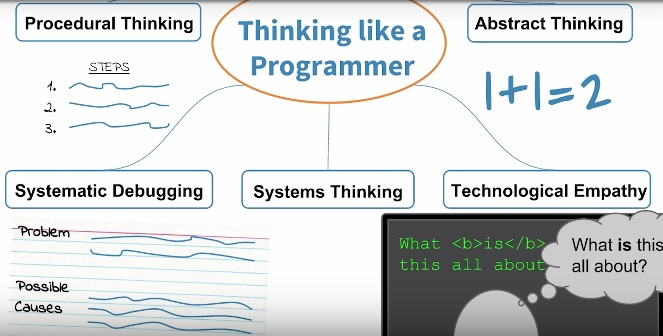
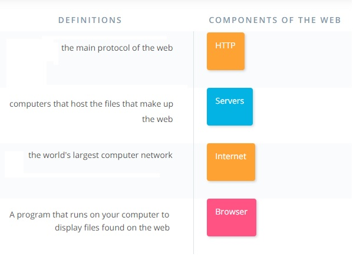
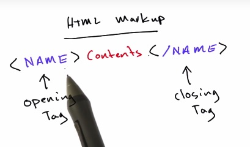
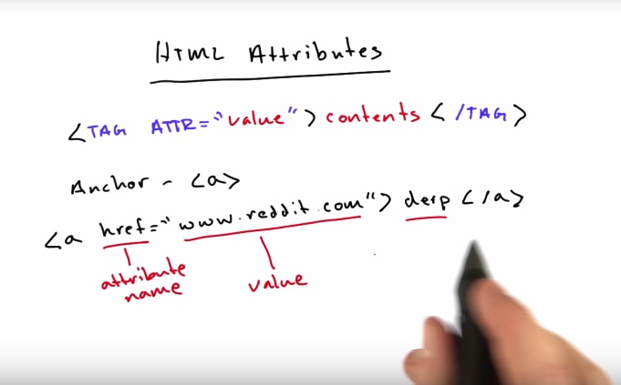
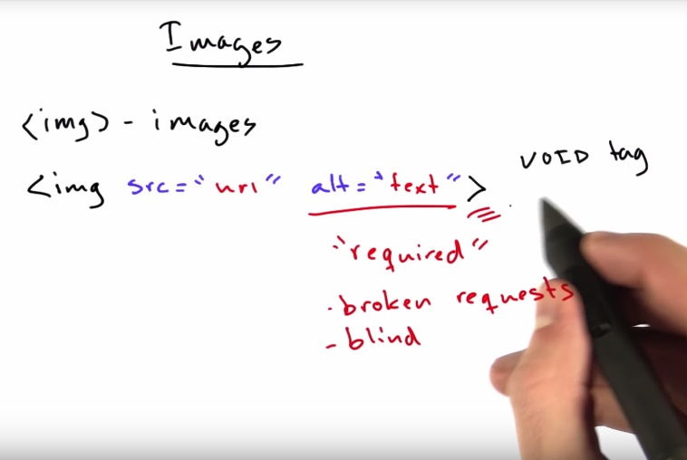
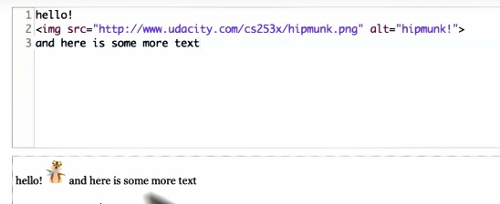
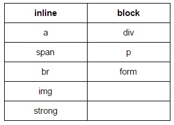

(16)
(16)
Setting Up: Set up your text editor (Atom, Pycharm, etc) (2)
Thinking Like a Programmer:
(6)
Support from the Udacity Team:
Integrity and Mindset: The Honor Code: "I hereby confirm that all of my project submissions consist of my own work. Accordingly, I will document and cite the origins of any part(s) of my project submissions that were taken from websites, books, forums, blog posts, github repositories, or any other source and explain why I used them for any part of my submission. I understand that I may be asked to explain my work in a video call with a Udacity Coach before my Nanodegree is conferred." (6)
(8)
What is HTML? Hyper Text Markup Language (1)
Intro to HTML Tags: HTML Markup: <name>contents</name>
 (2)
Follow Along with Steve: Making stuff bold: HTML is <b>reasonably straightforward</b> (3)
Italics: <em>HTML is <b>reasonably straightforward</b></em> (5)
Making Links:
 (8)
Adding Images:

(9)
Inline vs Block: Example: <br> is inline whereas <p> is a block. What <p> does that's different from <br> is it created an invisible box around it's contents. (13)
Span and Div: <span> is inline and <div> is block. They don't do anything other than just contain their content and there's a way to attach styles to them, to adjust how they display.
 (15)
Document Structure:
(16)
Take notes as you go
In DevTools, sideways triangles are an HTML element. Elements often contain other elements, so, for the most part, make your indentation reflect that tree-like structure accordingly. (5)
In DevTools, to pull up the styling for an element, click on the element's HTML line (on the left side). (7)
You can create a circle using the border radius property. (10)
To draw a box around every visual element, (12)
To get an idea of how many divs a page might have, see this example of a page that'd be divided up into 9-20 boxes. (12)
This page IS Lesson 3. Meta.
If you want to write CSS that makes all h1 elements have a black background and white text, you would write h1 {background-color : black;color: white;} In this example, the h1 is a selector. It says to the browser "I want you to apply the rules I'm about to tell you to every h1 element." Everything between these curly braces will be interpreted as a "rule" that should be applied to every h1 element. The line of code that says background-color : black; is a declaration. background-color is a property and black is the value of that property.
CSS Vocabulary
Box Structure: Content inside padding inside border inside margin. (11)
Box Sizing
Divs are block elements (as opposed to inline), so by default they take up the entire width of a page. Adding the rule display: flex; to the appropriate CSS will override this behavior and let divs appear next to each other. (13)